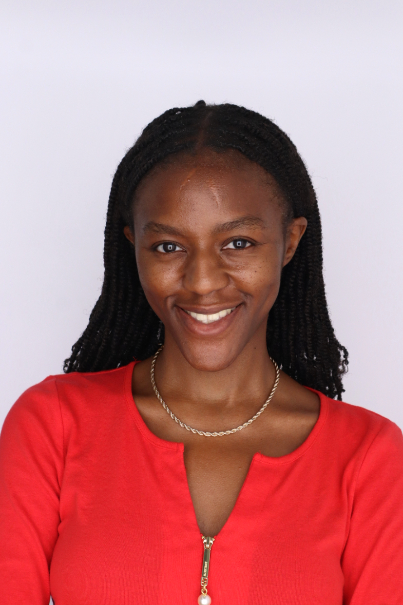

I grew up in Uganda and built my career on a simple belief: a model is only worth the decision it improves.
For six years at Stanbic Bank Uganda, one of East Africa's largest banks, I lived that belief, cutting processing time by 83% through automation, reducing customer queries by 25%, and lifting qualified leads by 20%. Then I took it to UC Berkeley, earning a Master's in Information and Data Science with a 4.0 GPA, where my capstone modelled food insecurity for the UN World Food Programme.
I care less about the cleverest algorithm and more about the "so what." I ship things that run in production, I translate findings for the people making the call, and I do not hand over a notebook and call it done.
I also mentor women breaking into STEM through the SheGeek programme and stay active in the Women in Data Science community. The pipeline only widens if someone holds the door, so I try to hold it.
Away from the screen, I paint and play the piano. Both are the same skill, really: knowing when something is finished, and having the patience to get it there.
Open to global opportunities in data science and analytics. British citizen, available immediately.